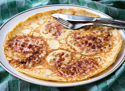

De Pannekoek
Een pannenkoek of Nederlandse pannenkoek is een stijl van "Pancake" met oorsprong uit Nederland. Pannenkoeken zijn meestal groter en veel dunner dan Amerikaanse pannenkoeken, maar niet zo dun als Crêpes. De meeste pannenkoeken vind je met spek, appel(stroop), kaas of rozijnen.
